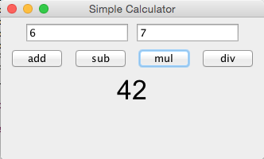

Calculator
1. In a Calculator class, create methods for add, multiply, subtract, and divide.
2. Create a CalculatorRunner class to test the above methods.
3. Add a Swing UI to the Calculator (see example below), with 2 fields to input numbers, and buttons for each math operation.
